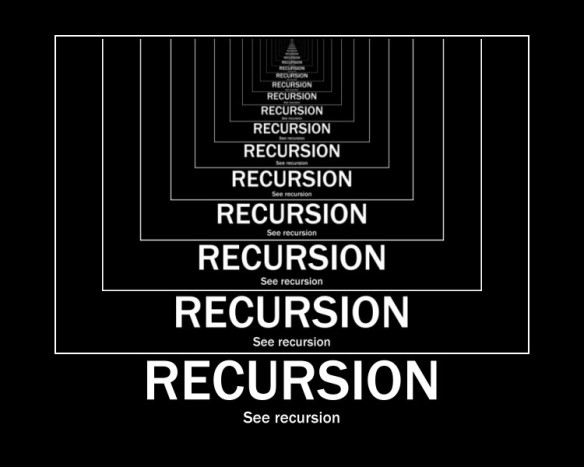

def fun_a():
print("A")
fun_b()
print("Another A")
def fun_b():
print("B")
def fun_c():
print("C")
if __name__ == "__main__":
fun_a()
fun_b()
fun_c()A
B
Another A
B
C
What will this print?
What’s the runtime?
What’s the runtime? \(O(n)\)
“a recursive function calls itself”
The First Law of Recursion
“a recursive function must have at least one base case”
What’s our base case for our recursive factorial function?
“a recursive function needs a base case”
The Second Law of Recursion
“recursive case(s) must always move towards a base case”
What’s our recursive case for our factorial function?
“recursive case(s) must always mode towards a base case”
We need to get to 1
\(5! = 5 * 4 * 3 * 2 * 1\)
For various math reasons, \(0!\) is defined to be \(1\)
The runtime complexity T(N) of a recursive function will have function T on both sides of the equation
Using O-notation to express runtime complexity of a recursive function requires solving the recurrence relation.
\(T(N) = T(N-1) + 1\)
\(T(N) = T(N-1) + 1\)
…
Here’s our original Binary Search implementation:
def binary_search(arr, v):
low = 0
high = len(arr)-1
while low <= high:
mid = (low+high) // 2
if v > arr[mid]: # update low
low = mid + 1
elif v < arr[mid]: # update high
high = mid - 1
else:
return mid
return -1
if __name__ == "__main__":
numbers = [0, 5, 10, 23, 41, 43, 44, 60, 99, 120, 343]
assert binary_search(numbers, 99) == 8
assert binary_search(numbers, 9) == -1Write binary search as a recursive function.
Remember:
Write binary search as a recursive function.
Call your function binary_search and your file binary_search.py to submit to gradescope
def recursive_binary_search(lst, target, low, high):
mid = (low+high)//2
if lst[mid] == target:
return mid
if low > high:
return -1
if target < lst[mid]:
return recursive_binary_search(lst, target, low, mid-1)
if target > lst[mid]:
return recursive_binary_search(lst, target, mid+1, high)
def binary_search(arr, target):
return recursive_binary_search(arr, target, 0, len(arr)-1)
if __name__ == "__main__":
numbers = [0, 5, 10, 23, 41, 43, 44, 60, 99, 120, 343]
assert binary_search(numbers, 99) == 8
assert binary_search(numbers, 9) == -1
print("Passed tests")Passed testsWhat’s the runtime for recursive binary search?
What’s the runtime for recursive binary search?
The runtime complexity T(N) of a recursive function will have function T on both sides of the equation
Using O-notation to express runtime complexity of a recursive function requires solving the recurrence relation.
What’s the runtime for recursive binary search?
The runtime complexity T(N) of a recursive function will have function T on both sides of the equation
\(T(N) = T(N/2) + 1\)
Using O-notation to express runtime complexity of a recursive function requires solving the recurrence relation.
What’s the runtime for recursive binary search?
\(T(N) = T(N/2) + 1\) N is size of list
Using O-notation to express runtime complexity of a recursive function requires solving the recurrence relation.
What’s the runtime for recursive binary search?
What’s the value of \(k\)?
\(k = \log_2 N\)
\(O(\log N)\)
What’s the runtime for recursive binary search?
\(T(N) = T(N/2) + 1\) N is size of list
Using O-notation to express runtime complexity of a recursive function requires solving the recurrence relation.
…
\(O(\log N)\)
Power Function: Computing \(x^n\) can be defined as \(x^n = x × x^{(n-1)}\), with base case \(x^0 = 1\). You can assume the exponent is zero or greater.
What’s the runtime?
What’s the runtime? \(T(N) = T(N-1) + 1\)
\(O(N)\)
Two to X: Computing \(2^x\) can be defined as \(2^x = 2^1 * 2^{x-1}\) or \(2^x = 2^{x-1} + 2^{x-1}\), with base case \(2^0 = 1\). You can assume the exponent x is zero or greater.
What’s the difference in runtime between the two solutions?
For solution 1, the call stack is linear: two_to(4) → two_to(3) → two_to(2) → two_to(1) → two_to(0)
For solution 2, each call branches out twice:
two_to(4)
/ \
two_to(3) two_to(3)
/ \ / \
two_to(2) two_to(2) two_to(2) two_to(2)
/ \ / \ / \ / \
two_to(1) ... ... ... ... ... ... ...
/ \ / \ / \ / \ / \ / \ / \ / \
two_to(0) ...While the two solutions produce the same result, Solution 1 is far more efficient. Solution 2’s repeated computation of the same subproblems makes it extremely wasteful
Solving the recurrence:
Big-O: O(N) where N = exp
\(T(0) = O(1)\) — base case
\(T(N) = 2 · T(N-1) + O(1)\) — two recursive calls plus constant work (addition)
\(T(N) = 2 · T(N-1) + 1\)
\(T(N) = 2 · (2 · T(N-2) + 1) + 1 = 4 · T(N-2) + 2 + 1\)
\(T(N) = 4 · (2 · T(N-3) + 1) + 3 = 8 · T(N-3) + 7\)
\(T(N) = 2^k · T(N-k) + (2^k - 1)\)
When \(k = N\): \(T(N) = 2^N · T(0) + (2^N - 1) = O(2^N)\)
A fibonacci sequence is such that each number is the sum of the two preceding ones:
\(F(n) = F(n-1) + F(n-2)\), with base cases \(F(0) = 0\) and \(F(1) = 1\).
This generates the sequence 0, 1, 1, 2, 3, 5, 8, 13, 21, 32, …
Test cases:
Recurrence Relation:
\(O(2^n)\)